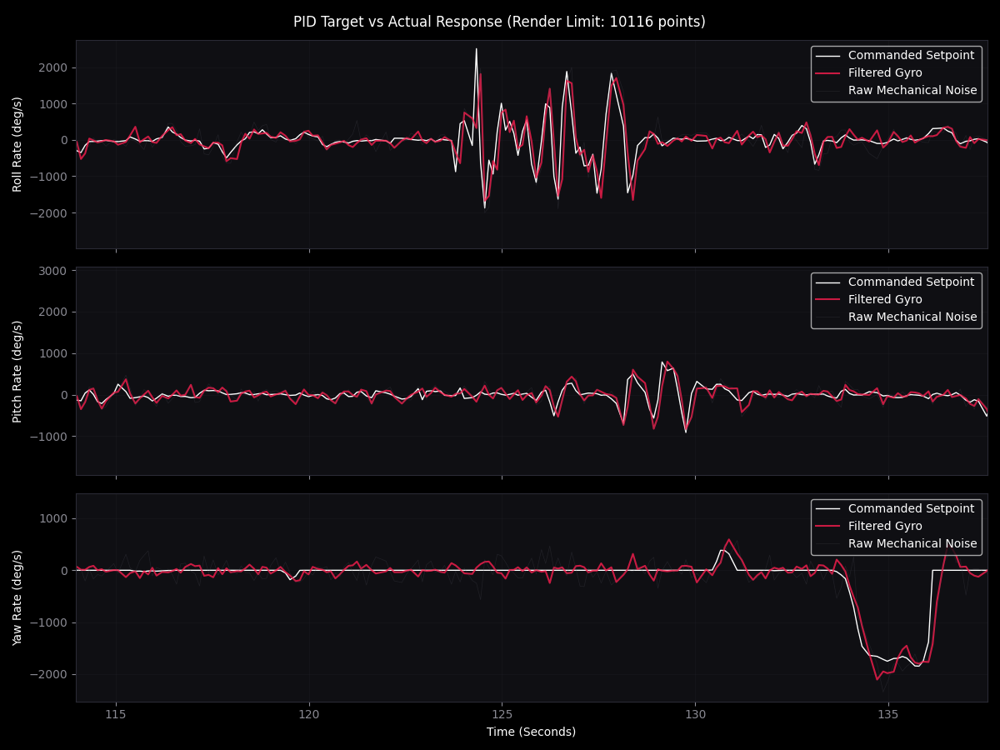
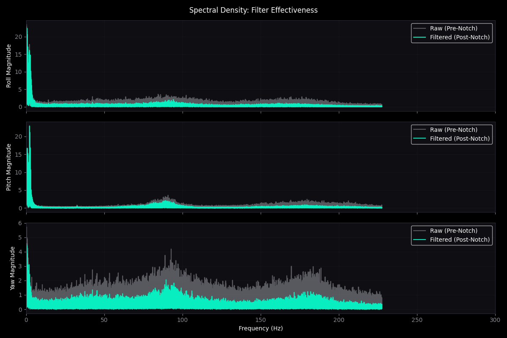
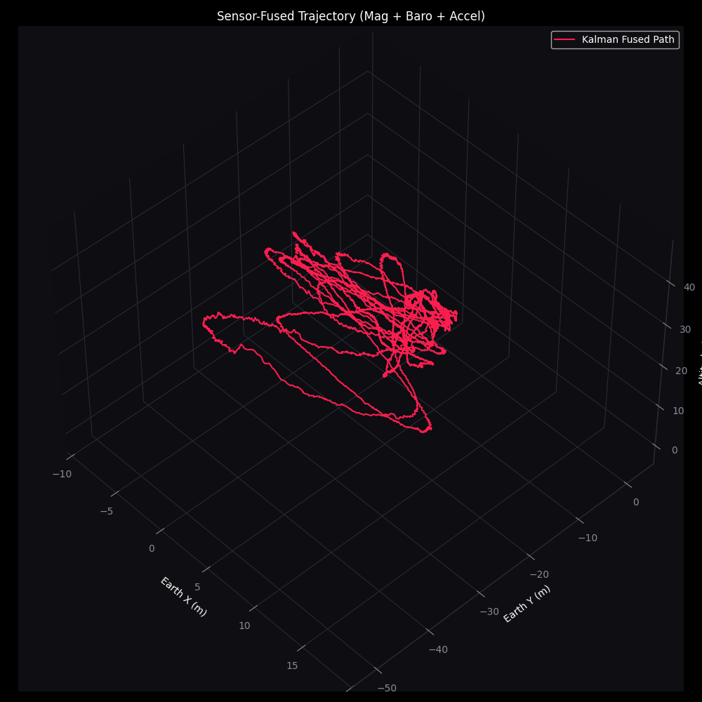
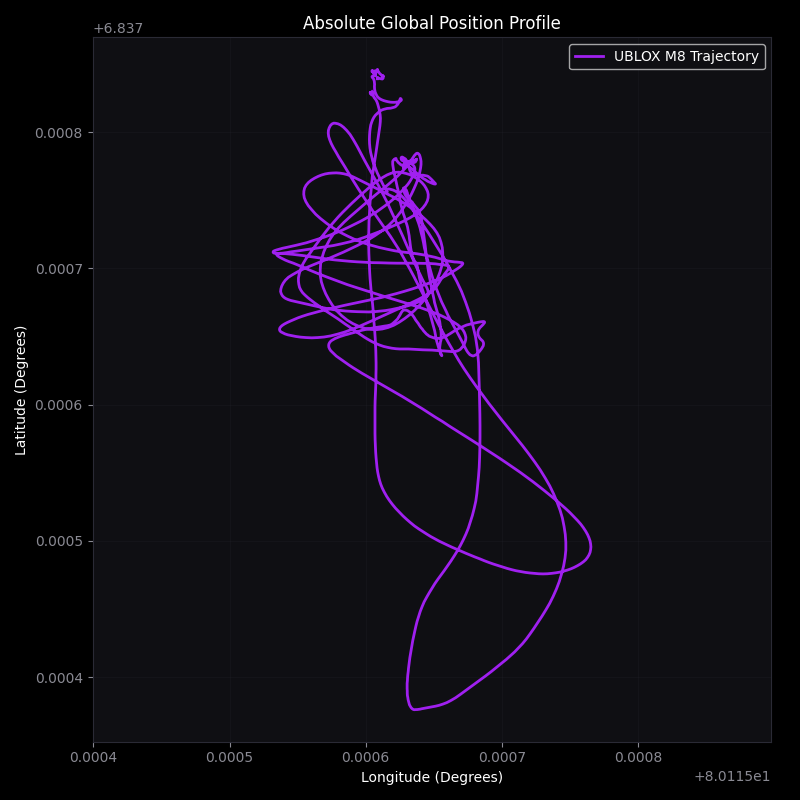
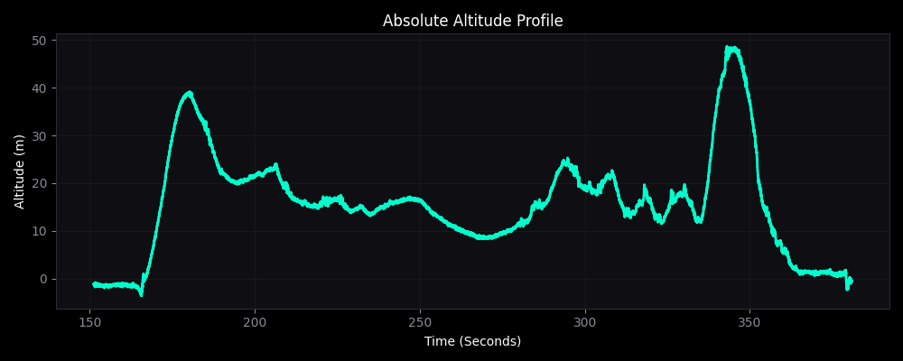
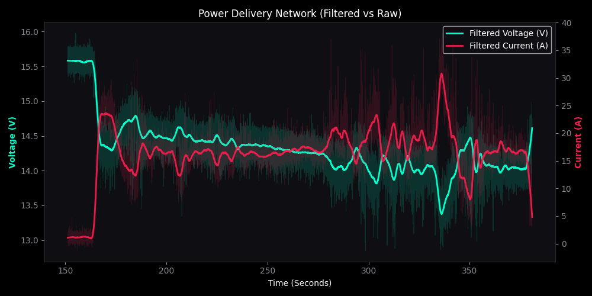

GX Telemetry Engine
input:CSV blackbox logs
scale:500k+ samples
views:9 analysis modes
stack:Python · NumPy · Matplotlib
What it does
Post-flight analysis toolchain for FPV flight controller blackbox logs. Loads multi-hundred-thousand- sample CSV logs, then renders any of nine different analysis views — from raw PID tracking to a Kalman-fused 3D flight trajectory — in a single interface.
Analysis modules
- PID setpoint vs gyro tracking — roll, pitch, yaw channels with configurable render limit
- FFT spectral analysis — pre-notch vs post-notch filter effectiveness across all axes
- Kalman-fused 3D trajectory — magnetometer + barometer + accelerometer fused path
- 2D GPS coordinate path — UBlox M8 waypoint rendering
- Barometric altitude profile — absolute altitude over flight time
- 3-axis velocity & displacement — earth-frame kinematics
- Battery kinetics — filtered voltage/current over the flight envelope
- RF link health — CRSF/ELRS packet integrity and signal strength
Sample output
Each module renders independently, so the same log can be inspected from multiple angles without reprocessing.

Interface
One window, nine toggleable analysis modules, single CSV load.

PID tracking
Commanded setpoint vs filtered gyro across roll/pitch/yaw.

Spectral density
Pre-notch vs post-notch — filter effectiveness across the band.

3D trajectory
Sensor-fused path — magnetometer + barometer + accelerometer.

GPS path
UBlox M8 2D trajectory — every waypoint logged and rendered.

Altitude profile
Absolute barometric altitude over the full flight duration.

Battery kinetics
Filtered voltage and current over the flight envelope.